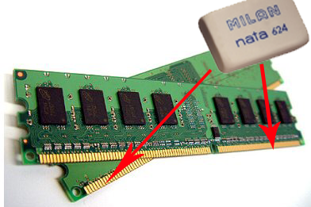

Si estas aquí es porque quieres solucionar este problema de una vez por toda, aquí te ofrecemos la soluciones aceptadas, claro para eso estas tu, para que lo aplique y muestres que de verdad puedes solucionar los problemas sin necesidad de un técnico, (Siempre y cuando tengas cuidado con lo que haces y conocimientos básico sobre el tema), es bueno saber en vez en cuando como funcionan una computadora esto te ayudara a ser precavido a la hora de solucionar este problema de una vez.
Estamos preparado para estas soluciones, (la solución que podría ayudar seria un formateo e instalación de Windows) pero para darte esta solución tienes que saber que no en todo momento funciona, podrías ser problemas de hardware como la memoria que llegó su límite, pero también hay soluciones para este problema sin necesidad de comprarte otra, pero hablaremos eso más adelante.
Primero vamos por la parte del software (porque que hay 2 posibles problemas el de hardware y software), pero lo que tienes que tomar en cuenta que el pantallazo no se deba cuando inicia el Windows porque que hay 2 tipos de pantallazo azul, cuando inicia Windows y cuando muestra a los minutos o en los casos horas.
Si te sale el pantallazo azul al principio cuando inicia Windows más adelante te daremos la solución, por ahora nos enfocaremos en aquella persona que le salga a los minutos o en algunos casos horas.
Lo primero que tienes que hacer es verificar que tengas todos los controladores actualizado y Tecno Expand te ofrece este maravilloso programa que usa nuestro clientesdriver booster te actualiza hasta el último controlador del equipo

Si el problema persiste puede ser virus en tu PC, puedes usar el antivirus de tu equipo pero el que te recomienda una vez más TECNO EXPAND es 360 Total Securityhasta ahora nos ha funcionado a la perfección.
Puede usar la opcion anterior que te dije, (Formateo e instalacion de tu windows) Si aún asi tienes el pantallazo azul entonce vamos con el siguiente paso
Ahora si podemos diagnosticar que este parte por obligación el problema persiste cuando inicia Windows, En este caso ya es un problema de hardware que tenemos que solucionar, lo primero que vamos a chequear es la memoria RAM, la forma más fácil, primero, es abriendo la tapa de la caja (la tapa de la carcasa de la PC), lo sacas y lo limpias con un borrador por los pines así.

En todo caso si aún persiste el problema, puedes intentar probar con otra memoria para salir de ese problema de una vez por todas. Si tienes tarjeta gráfica puedes hacer el mismo procedimiento que hiciste con la memoria, si el problema persiste puedes probar el cable que conecta a la tarjeta gráfica en la salida VGA.
Si aún tienes problemas, te daremos una pista, por que cada pantallazo hay un tipo de error aquí entre tantas:
IRQL NOT LESS OR EQUAL: Drivers incompatibles o que no funcionan.
UNKNOWN HARD ERROR o STOP c0000221: Archivos del registro dañados o borrados, RAM defectuosa.
STATUS SYSTEM PROCESS TERMINATED: Software o drivers incompatibles.
KMODE EXCEPTION NOT HANDLED: Drivers incompatibles o mal diseñados, software con fallos graves, hardware defectuoso
NTFS FILE SYSTEM, FAT FILE SYSTEM o NTFS FILE SYSTEM: Disco duro dañado, cables de disco en mal estado, sistema de archivos dañado
PAGE FAULT IN NONPAGED AREA: Drivers incompatibles, software incompatible, RAM o placa base defectuosa
SYSTEM THREAD EXCEPTION NOT HANDLED: Drivers o software incompatibles, BIOS defectuosa, hardware incompatible
KERNEL MODE EXCEPTION NOT HANDLED: Hardware, drivers o BIOS incompatible. Lo más habitual es que se trate de RAM defectuosa
BAD POOL HEADER: Software, hardware o RAM defectuosa
STOP c000021a: Error en csrss.exe o winlogon.exe
BAD CONFIG SYSTEM INFO: Fallos en el registro
No te preocupes, TECNO EXPAND se especializa en solucionar problemas como esto, no importa si estas lejos de nosotros, podemos ayudarte específicamente de tu problema solo tienes que seguirnos en Facebook y enviarnos un mensaje hablando sobre su problema y podremos ayudar desde allí con programas que usamos a nuestros clientes y a todo aquel que quiere ayuda sobre este tipo. Si te pareció útil este articulo o te ayudamos en este problema puedes seguirnos en nuestra siguiente redes sociales Youtuber instagram
Quizas te puede interesar

¿ crees que un crack puede pueda ser causa probable de virus o lentitud de tu pc ? Tecno Expand te responde las siguientes razones....
Entrar